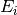

DetectorEfficiencyCor dialog.
Table of Contents
This algorithm adjusts the binned data in a workspace for detector efficiency, calculated from the neutrons’ kinetic energy, the gas filled detector’s geometry and gas pressure. The data are then multiplied by 
| Name | Direction | Type | Default | Description |
|---|---|---|---|---|
| InputWorkspace | Input | MatrixWorkspace | Mandatory | The workspace to correct for detector efficiency |
| OutputWorkspace | Output | MatrixWorkspace | Mandatory | The name of the workspace in which to store the result. Each histogram from the input workspace maps to a histogram in this workspace that has just one value which indicates if there was a bad detector. |
| IncidentEnergy | Input | number | Optional | The energy of neutrons leaving the source as can be calculated by GetEi v2. If this value is provided, uses property value, if it is not present, needs Ei log value set on the workspace. |
The probability of neutron detection by each detector in the workspace is calculated from the neutrons’ kinetic energy, angle between their path and the detector axis, detector gas pressure, radius and wall thickness. The detectors must be cylindrical and their 3He partial pressure, wall thickness and radius are attached to the instrument stored in the input workspace, The first parameter is in atmospheres and the last two in metres. That workspace then needs to be converted so that its X-values are in units of energy transfer, e.g. using the ConvertUnits v1 algorithm.
To estimate the true number of neutrons that entered the detector the counts in each bin are divided by the detector efficiency of that detector at that energy. The efficiency iteslef is calculated from the formula, tabulated within the algorithm.
The numbers of counts are then multiplied by the value of
for each bin. In that formula  is the
wavenumber a neutron leaving the source (the same for all neutrons) and
is the
wavenumber a neutron leaving the source (the same for all neutrons) and
 is the wavenumber on hitting the detector (dependent on the
detector and energy bin). They’re calculated, in angstrom-1, as
is the wavenumber on hitting the detector (dependent on the
detector and energy bin). They’re calculated, in angstrom-1, as

where  and are energies in meV, the initial neutron kinetic energy and the energy lost to the sample respectively.
Note: it is not possible to use this algorithm to
correct for the detector efficiency alone. One solution to this is to
divide the output of the algorithm by calculated as above.
See also
DetectorEfficiencyCorUser v1 algorithm, which may provide more instrument specific efficiency corrections.
Example - Correct detectors efficiency:
# Simulates Load of a workspace with all necessary parameters #################
detWS = CreateSimulationWorkspace(Instrument='MAR',BinParams=[-50,2,50],UnitX='DeltaE')
detWS.dataE(0)[range(0,50)]=1
AddSampleLog(detWS,LogName='Ei',LogText='52.',LogType='Number');
# Correct detectors efficiency
corWS = DetectorEfficiencyCor(detWS)
corWS = CorrectKiKf(corWS,EMode='Direct')
#
# Look at sample results:
print('part of the corrected workspace:')
for i in range(15,30):
print('{} {} {:.11f} {} {:.11f}'.format(detWS.readX(0)[i],detWS.readY(0)[i],corWS.readY(0)[i],detWS.readE(0)[i],corWS.readE(0)[i]))
Output:
part of the corrected workspace:
-20.0 1.0 1.11489184233 1.0 1.11489184233
-18.0 1.0 1.12451654494 1.0 1.12451654494
-16.0 1.0 1.13460358926 1.0 1.13460358926
-14.0 1.0 1.14519004998 1.0 1.14519004998
-12.0 1.0 1.15631723061 1.0 1.15631723061
-10.0 1.0 1.16803129778 1.0 1.16803129778
-8.0 1.0 1.18038403500 1.0 1.18038403500
-6.0 1.0 1.19343374325 1.0 1.19343374325
-4.0 1.0 1.20724632323 1.0 1.20724632323
-2.0 1.0 1.22189658402 1.0 1.22189658402
0.0 1.0 1.23746983599 1.0 1.23746983599
2.0 1.0 1.25406384358 1.0 1.25406384358
4.0 1.0 1.27179123770 1.0 1.27179123770
6.0 1.0 1.29078252032 1.0 1.29078252032
8.0 1.0 1.31118984059 1.0 1.31118984059
Categories: AlgorithmIndex | CorrectionFunctions\EfficiencyCorrections | Inelastic\Corrections
C++ source: DetectorEfficiencyCor.cpp (last modified: 2019-06-05)
C++ header: DetectorEfficiencyCor.h (last modified: 2018-10-05)